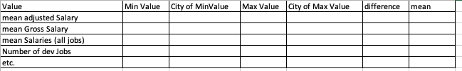

Details of Programming Assignment 2 (worth 20%)
This Programming Assignment will test your knowledge of manipulating data, using more complex libraries and more complex types.
This assignment is worth 20%.
The deadline is Friday, 5th May at 18:00 with interviews on the following week.
#Overview of Assignment
You are asked to read in a csv data file from here. (I have changed the names of the columns to simplify the parsing). This is called “salaries.csv” and is in your starter code.
You are asked to do analysis on the data. (details later)
You are asked to use the Stack package to structure your solution, using
\app to have Main.hs which deals with IO and the main function
\src which will contain the modules used to strucure and analyse the data.
\test does not need to be of interest to you.
The ‘reporting’ will be
This assignment is heavliy based on a case study that is presented on the stockQuotes example. This is published here (on tutors) and you should use this to influence the structure of your solution.
#Suggested Plan of Attack
I suggest the following plan of attack for this assignment.
You should read the stockQuotes example.
Make changes to the code given, add in more analysis, ensure that you understand that code.
Download your starter code from here.
Design your data type (Similar to QuoteData).
Work on calculations.
Test it on simple text to console.
Try a simple generation of html to a file. (From the Main.hs)
Work this until there is full versions of data (analogous to the html in StockQuotes example) being reported to the HTML File. Ensure that you have generated all specified reports.
You are asked to report at least the following using text and html generation :

the highest,lowest and mean adjusted salary, difference between highest and lowest mean adjusted salary. In the case of lowest and highest, the city(city name) should be listed
some extra analysis of your own choosing
The deadline is Friday, 5th May at 18:00 with interviews on the following week.
Interview You will be interviewed on this assignment. It is alright (and expected) that you use the case study extensively but you MUST understand the code that you submit. For the other functions, you can use similar ideas but the more different the better. Reference any material (outside the material directly given by me) including any use of AI bots.
(Indiciave but close enough!)
| Part of assignment | % |
|---|---|
| Working stack solution / use of libraries etc | 5 |
| Using Data.Csv to parse the given csv file, including parseNamedRecord, parseNamedField | 5 |
| Definition and use of apprpopriate CityType data type | 10 |
| Report generation including use of traversal over data types (similar to statInfo ), text based and prep for html generation. This to include some extra calculations | 30 |
| Generating html code using the generated data from above | 10 |
| Command line arguments | 5 |
| Bringing it all together in Main.hs | 5 |
| Extra (wow factor) | 10 |
| Clarity, appropriateness, elegance, haskell-ness of code (including naming) | 20 |
Also, clearly describe any extra functionality in your readme.md.
The mark for the interview (which tests your authorship and understanding of the code ) will take place in week after submission and will be used as a multiplier for the code. It follows that the interview is mandatory. You need to be available following the submission of the assignment. Schedule will be available nearer the time.
Please note that if. you submit early, I can be available to interview at a time that suits both of us.